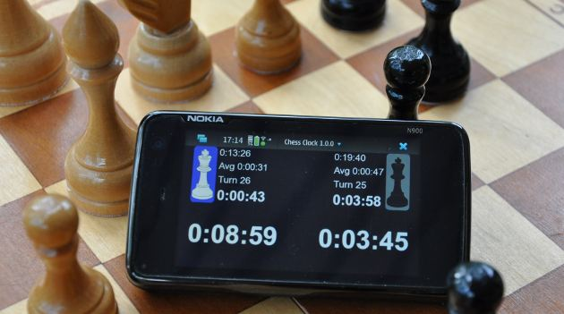

Chess Clock is game clock software for chess players with N900.
Software supports different time controls (time additions, delays, hour
glass). Timers are
adjustable, different time settings for white and black are available.
Chess clock is available in extras-devel repository. A new version (1.1.0) has been released.